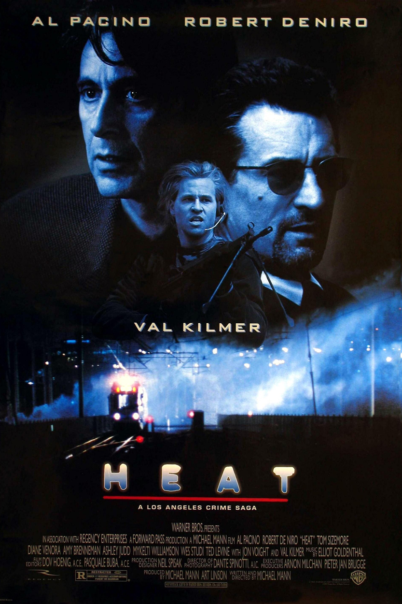

The Godfather: Part II (1974)

Clasificación: R
Duración: 3h22m
Género: Crimen, Drama
Fecha de Lanzamiento: 18/12/1974
Sinopsis: Continuación de la historia de
los Corleone por medio de dos historias paralelas: la
elección de Michael como jefe de los negocios familiares
y los orígenes del patriarca, Don Vito Corleone, primero
en su Sicilia natal y posteriormente en Estados Unidos,
donde, empezando desde abajo, llegó a ser un poderoso
jefe de la mafia de Nueva York.
Dirigido por: Francis Ford Coppola
Escrito por: Francis Ford Coppola y Mario Puzo
Elenco: Al Pacino, Robert Duvall, Diane Keaton,
Robert De Niro, John Cazale, Talia Shire, Lee Strasberg, Michael V. Gazzo, ...
IMDB:
9/10
Rotten Tomatoes:
97%
Metacritic:
90%
Recomendados

The Godfather Part III (1990)

The Godfather (1972)

The Goodfellas (1990)

The Irishman (2019)

Heat (1995)

Scarface (1983)